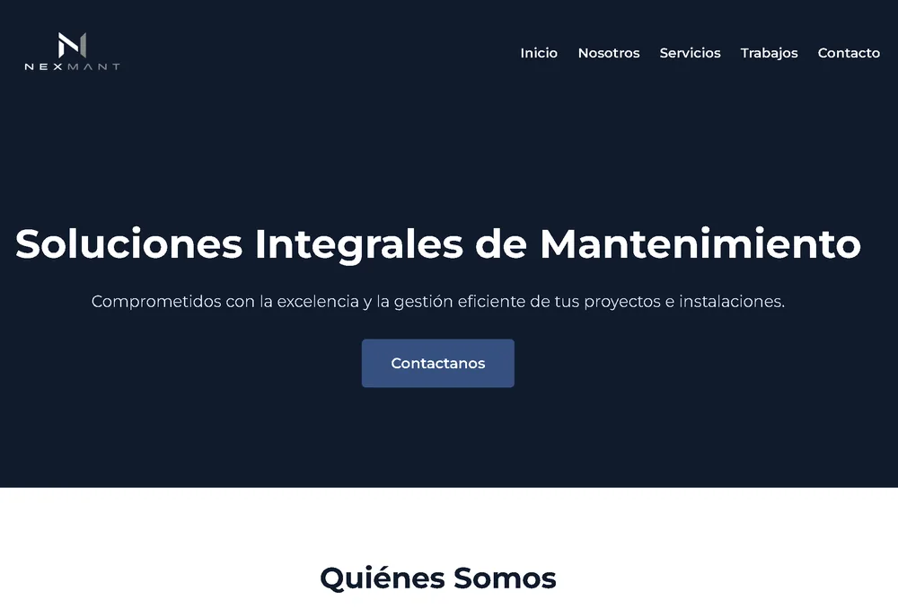
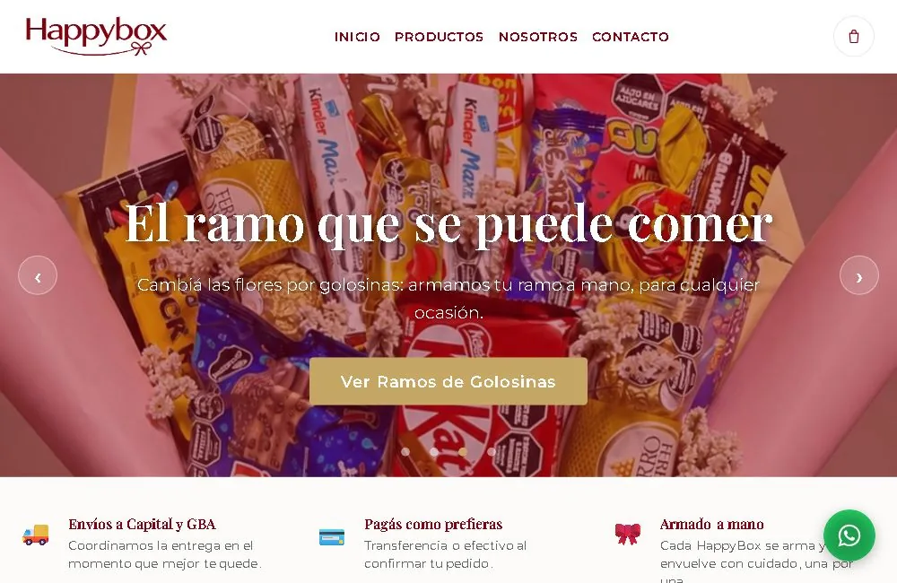
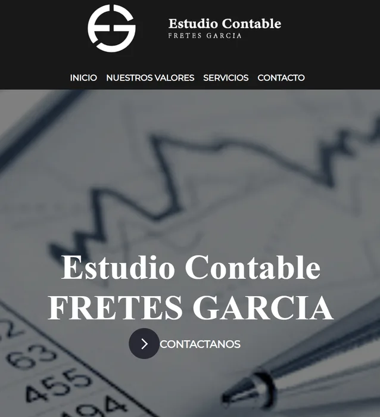
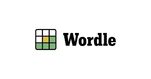
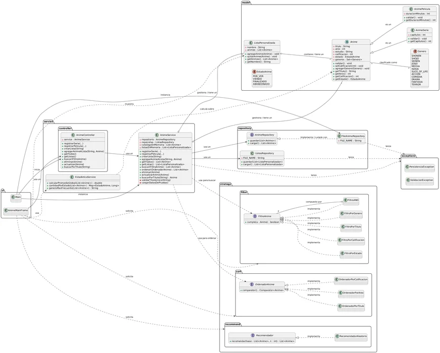
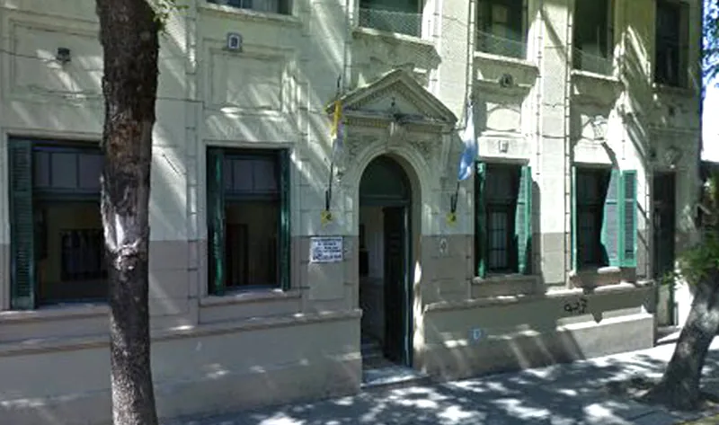
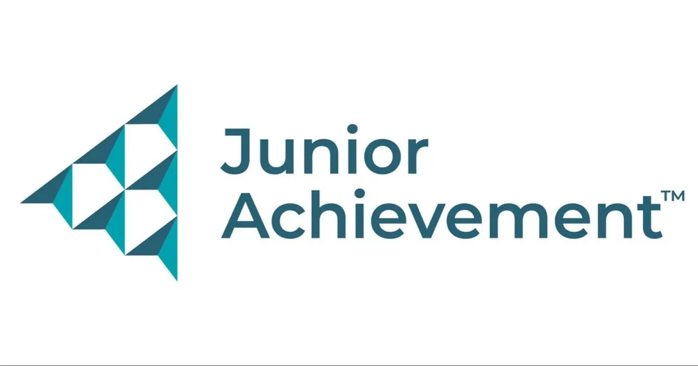

Desarrollador web junior
Alejo Ferrari Cioffi
Soy estudiante de Desarrollo de Software en UADE y desarrollador web freelance. Me interesa crear soluciones útiles y seguir creciendo junto a un equipo en un puesto trainee o junior.
Proyectos
Sitios publicados para clientes, herramientas de gestión y proyectos de mi formación. Cada uno muestra una forma distinta de resolver un problema.

Nexmant
Cliente real · Freelance
Necesidad: presentar los servicios de una empresa de mantenimiento y permitir la actualización de su contenido.
Mi aporte: desarrollé el sitio adaptable a celulares, los servicios y la galería dinámicos, y un panel de administración conectado a Google Apps Script.
Resultado: un sitio publicado con gestión de servicios e imágenes y consultas por WhatsApp.
Visitar sitio (abre en otra pestaña)
HappyBox
Cliente real · Freelance
Necesidad: mostrar el catálogo de regalos y facilitar la preparación de pedidos.
Mi aporte: desarrollé el catálogo con productos desde Google Sheets mediante una API de Google Apps Script y un carrito persistente en localStorage.
Resultado: los visitantes pueden armar su pedido desde el celular y enviarlo por WhatsApp.
Visitar sitio (abre en otra pestaña)
Estudio Fretes Garcia
Cliente real · Freelance
Necesidad: contar con una presencia web propia para el estudio contable.
Mi aporte: coordiné con el cliente el diseño y desarrollé el sitio de acuerdo con su identidad profesional.
Resultado: sitio publicado en el dominio del estudio, desde el diseño hasta la puesta en producción.
Visitar sitio (abre en otra pestaña)
Juego Wordle (Python)
Implementación del clásico juego de adivinanzas con lógica de validación, manejo de errores y retroalimentación visual.
Ver código (abre en otra pestaña)
Sistema de Anime (TP Final POO)
Trabajo final de la materia Paradigmas Orientados a Objetos. Modelado de dominio complejo aplicando herencia, polimorfismo y buenas prácticas.
Ver código (abre en otra pestaña)Sistema de Gestión de Asistencia
Desarrollé este sistema para mi trabajo actual. Armé una estructura de varias hojas conectadas a una tabla de configuración. Además, le integré alertas automáticas que detectan al instante cuando un alumno supera el límite de faltas.
Ver herramienta (abre en otra pestaña)Generador de Informes Académicos
Creé esta herramienta para optimizar los tiempos en mi entorno laboral. Me encargué de cruzar los datos de todas las materias para generar un boletín automático por cada alumno.
Ver herramienta (abre en otra pestaña)Registro y Trazabilidad de Sanciones
Diseñé este registro para llevar el seguimiento individual de incidencias. Además del panel de resumen global, le programé una vista dinámica de "Impresión" que genera automáticamente un documento formal.
Ver herramienta (abre en otra pestaña)Corte Criollo
Desarrollo de página web para barbería ficticia. Diseño e implementación de interfaz funcional, responsive y optimizada.
Visitar sitio (abre en otra pestaña)Experiencia Laboral
Desarrollo Web Freelance
Proyectos Independientes | Abril 2024 - Actualidad
- Desarrollé sitios web a medida para clientes reales (estudio contable, empresa de mantenimiento y emprendimiento de regalos), ocupándome del diseño, la programación y la puesta en producción de cada proyecto.
- Trabajé de forma independiente en cada proyecto, coordinando directamente con el cliente para entender sus necesidades y ajustar el resultado final.
Preceptor · Digitalización de procesos
Colegio Fasta Monseñor Aneiros | Julio 2021 - Actualidad
- Diseñé y desarrollé un sistema en Google Sheets para gestionar asistencia, con alertas automáticas, boletines por alumno y seguimiento de sanciones.
- Impulsé la digitalización de procesos y la implementación de herramientas para la comunicación entre directivos, docentes y familias.
- Gestioné la convivencia estudiantil y la organización cotidiana de los cursos.
Sobre Mí
Combino mi formación en desarrollo de software con experiencia directa con clientes y equipos educativos. Me interesa transformar necesidades cotidianas en herramientas concretas: desde un catálogo web hasta reportes académicos automáticos.
Contacto
- Ubicación: La Paternal, CABA
- Teléfono: 11 6552-0810
- Email: alejoferraricioffi0@gmail.com
Tecnologías
Estudios
TECNICATURA UNIVERSITARIA EN DESARROLLO DE SOFTWARE
UADE, CABA | JULIO 2024 - ACTUALIDAD

BACHILLER MERCANTIL
INSTITUTO FASTA MONSEñOR ANEIROS, CABA | 2014 - 2018
Cursos

JUNIOR ACHIEVEMENT
CURSO "YO PUEDO PROGRAMAR" (2023)